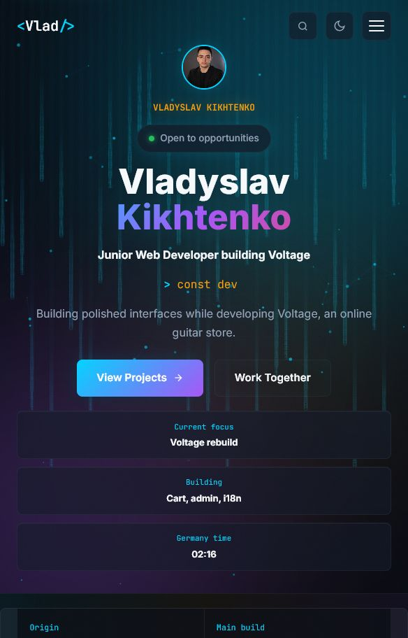

Recruiter route
Skills evidence, project status, and contact fit.
Junior frontend developer building Voltage, a proof-first portfolio, and responsive interface systems.

Search, section jumps, proof mode, and contact shortcuts.
Project claims are tied to visible proof surfaces.
Overflow, assets, nav targets, and interaction wiring are checked.
Skills evidence, project status, and contact fit.
Responsive UI, project flow, and honest scope.
Quality gate, lab board, and next React steps.